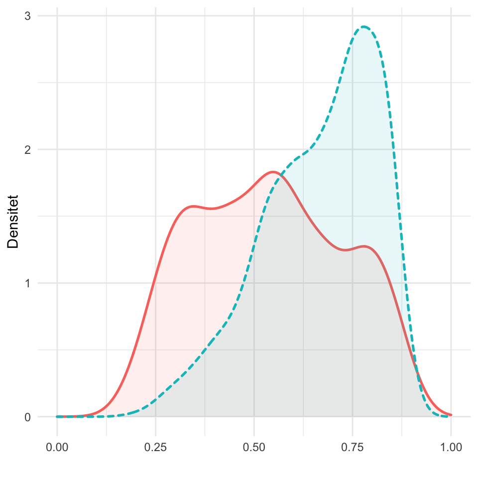
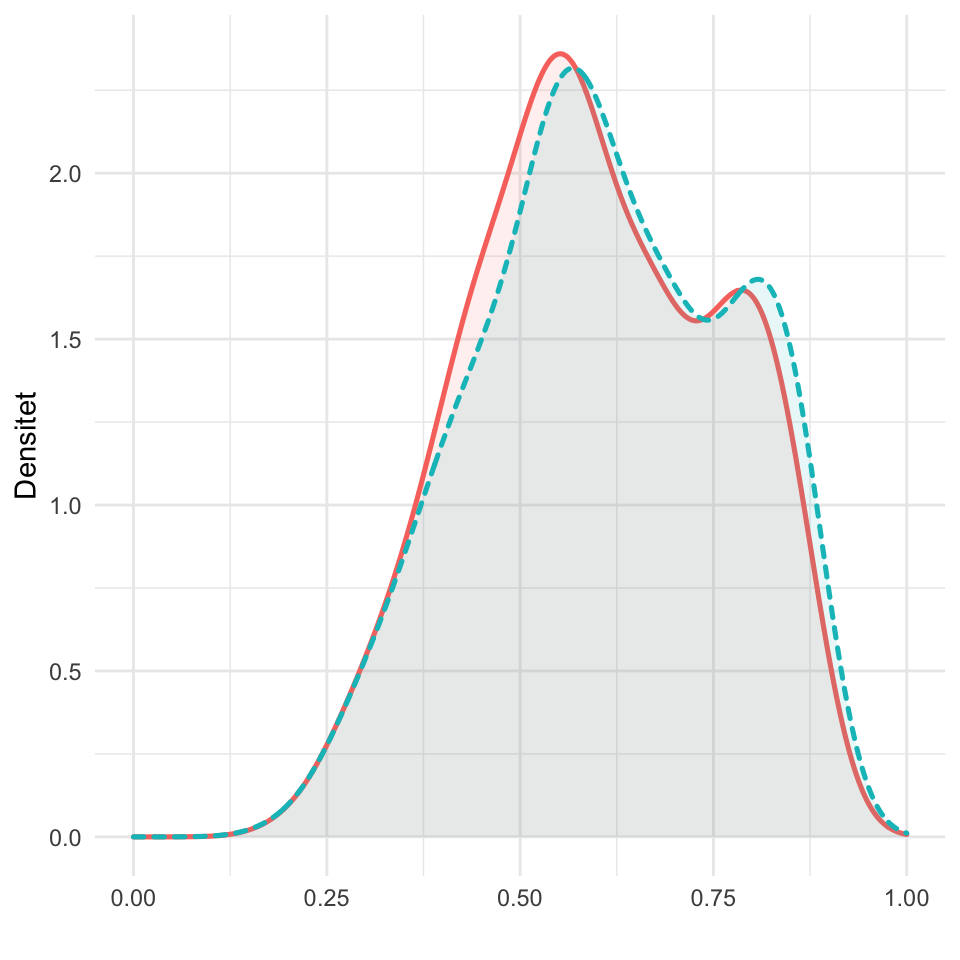
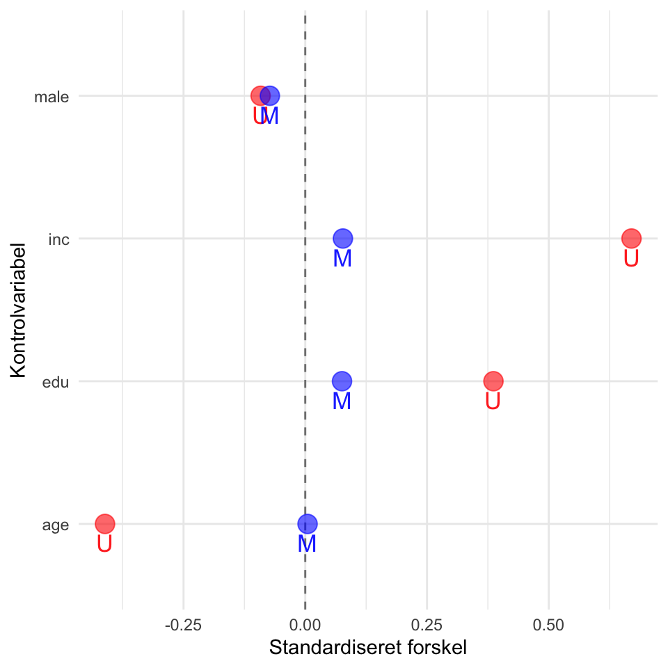

Kapitel 8 Propensity Score Matching
I dette kapitel gives en introduktion til, hvordan man gennemfører analyser med matching. Der vil - som i de andre kapitler - ikke bliver givet en introduktion til statistikken bag, så for de læsere, der skulle have en interesse i at læse et par introduktionsartikler, kan Ho, Imai, King, & Stuart (2007) og Sekhon (2009) anbefales.
Vi vil gøre brug af tre pakker i dette kapitel. Den primære pakke, der vil gøre det meste af arbejdet, er MatchIt (Ho, Imai, King, & Stuart, 2011). Der findes forskellige pakker, der alle indeholder tilsvarende funktioner, men MatchIt er blandt de nemmeste at anvende, hvorfor den også vil blive brugt her. De to andre pakker vi skal bruge, er ggplot2 (til at visualisere data) og RItools (til at undersøge balancen mellem ikke-matchede og matchede data). Først indlæser vi pakkerne:
library("ggplot2")
library("MatchIt")
library("RItools")Vi vil igen gøre brug af den danske del af European Social Survey fra 2014. For en nærmere beskrivelse af disse data og de respektive variable, henvises der til kapitlet om OLS regression.
ess <- read.csv("data/ess.csv")I dette eksempel ønsker vi at undersøge, om personer, der er medlem af en fagforening, er mere højreorienterede end folk, der ikke er medlem. Vi har dog en idé om, at køn, alder, uddannelse og indkomst, kan være med at til at forklare forskelle mellem dem, der er medlem af en fagforening og dem der ikke er. Med andre ord er de to grupper (hhv. gruppen af medlemmer og ikke-medlemmer) ikke sammenlignelige. Det første vi gør her er at specificere, at fagforeningsmedlemsskab er relateret til køn, alder, uddannelse og indkomst. Denne information gemmer vi i objektet treat.f:
treat.f <- union ~ male + age + edu + incDet første vi skal gøre er at have propensity scores, altså sandsynlighedsværdier, for, at en person er medlem af en fagforening eller ej, som en funktion af de respektkive uafhængige variable. Til at gøre dette estimerer vi først en logistisk regression med funktionen glm(), der står for generalized linear model. Dette gemmer vi i objektet fit, hvorefter vi bruger funktionen predict() til at få sandsynlighedsværdien for hver respondent, og denne gemmes i datarammen ess i variablen pscores.
fit <- glm(treat.f, family=binomial, data=ess)
ess$pscores <- predict(fit, type="response")Det næste vi gør er at bruge nearest neighbor matching underlagt en 0,1 kaliber (for de forskellige metoder, se hjælpefilen til matchit()). Resultaterne heraf gemmer vi i objektet m:
m <- matchit(treat.f, method = "nearest", caliper=.1, data = ess)
mA matchit object
- method: 1:1 nearest neighbor matching without replacement
- distance: Propensity score [caliper]
- estimated with logistic regression
- caliper: <distance> (0.017)
- number of obs.: 1285 (original), 774 (matched)
- target estimand: ATT
- covariates: male, age, edu, incI ovenstående kan vi se, at ikke alle cases kunne matches. Mere specifikt ender vi med 387 respondenter i hver gruppe. Vi bruger nu funktionen match.data() til at få en dataramme, for de respondenter, der er blevet matchet.
m.data <- match.data(m)Nu kan vi så sammenligne sandsynlighedsværdierne for henholdsvis de ikke-matchede og matchede datasæt. Først kigger vi på sandsynlighedsværdierne for de ikke-matchede data:
ggplot(ess, aes(x=pscores, linetype=as.factor(union),
fill = as.factor(union),
colour = as.factor(union))) +
geom_density(alpha = .1, size = .9) +
ylab("Densitet") +
theme_minimal() +
theme(legend.position="none") +
scale_x_continuous("", limits=c(0,1))
Her ses det tydeligt, at der ikke er et tilfredsstillende overlap mellem de to grupper. Som det næste kigger vi på vores overlap i de matchede data:
ggplot(m.data, aes(x=distance, linetype=as.factor(union),
fill = as.factor(union),
colour = as.factor(union))) +
geom_density(alpha = .1, size = .9) +
ylab("Densitet") +
theme_minimal() +
theme(legend.position="none") +
scale_x_continuous("", limits=c(0,1))
Her ses det omvendt, at der er et langt mere tilfredsstillende overlap mellem de ikke-matchede og de matchede data. Næst ønsker vi at belyse, om matching proceduren også har skabt bedre balance mellem de respektive grupper på de inkluderede, observerede variable. Til at gøre dette bruger vi funktionen xBalance(), hvorefter vi laver en ny dataramme med de standardiserede forskelle på de inkluderede variable før og efter matching. Denne dataramme kalder vi balance.df:
xB.unmatched <- xBalance(treat.f, data=ess, report=c("all"))
xB.unmatched <- as.data.frame(xB.unmatched)
std.unmatched <- xB.unmatched[,"results.std.diff.unstrat"]
xB.matched <- xBalance(treat.f, data=m.data, report=c("all"))
xB.matched <- as.data.frame(xB.matched)
std.matched <- xB.matched[,"results.std.diff.unstrat"]
balance.df <- data.frame(covariate = row.names(xB.matched),
unmatched=
std.unmatched[row.names(xB.unmatched)
%in% row.names(xB.matched)],
matched=std.matched)Resultaterne fra denne dataramme visualiserer vi så i nedenstående:
ggplot(balance.df, aes(x=covariate, y=unmatched)) +
geom_hline(yintercept=0, linetype="dashed", colour="gray50") +
geom_text(vjust = 1.6, aes(label="U", y=unmatched, size=.9),
colour="red", alpha = 0.9) +
geom_point(aes(y=unmatched, size=.9), colour="red",
alpha = 0.6) +
geom_text(vjust = 1.6, aes(label="M", y=matched, size=.9),
colour="blue", alpha = 0.9) +
geom_point(aes(y=matched, size=.9), colour="blue",
alpha = 0.6) +
coord_flip() +
xlab("Kontrolvariabel") +
ylab("Standardiseret forskel") +
theme_minimal() +
theme(legend.position="none")
Ovenstående viser, at de standardiserede forskelle er betydeligt mindre for de matchede data. Vi er således tilfredse med vores procedure, og kan nu køre vores analyser. Det første vi gør er at estimere en model på de ikke-matchede data. Dette gemmer vi i objektet reg.unmatched.
reg.unmatched <- lm(lrscale ~ union + male + age + edu + inc,
data=ess)Dernæst kører vi en regression på de matchede data. Dette gemmer vi i objektet reg.matched:
reg.matched <- lm(lrscale ~ union + male + age + edu + inc,
data=m.data)Vi kan så, forudsat at pakken stargazer er indlæst, se resultaterne med henholdsvis de ikke-matchede og de matchede data:
stargazer(reg.unmatched, reg.matched, type="text")
===================================================================
Dependent variable:
-----------------------------------------------
lrscale
(1) (2)
-------------------------------------------------------------------
union -0.270* -0.358**
(0.141) (0.163)
male 0.452*** 0.432***
(0.129) (0.164)
age 0.004 0.003
(0.004) (0.004)
edu -0.176*** -0.171***
(0.038) (0.046)
inc 0.118*** 0.129***
(0.025) (0.031)
Constant 5.279*** 5.304***
(0.292) (0.337)
-------------------------------------------------------------------
Observations 1,285 774
R2 0.040 0.048
Adjusted R2 0.036 0.041
Residual Std. Error 2.294 (df = 1279) 2.258 (df = 768)
F Statistic 10.693*** (df = 5; 1279) 7.691*** (df = 5; 768)
===================================================================
Note: *p<0.1; **p<0.05; ***p<0.01